Close-range all-rounder: devastating HP links and heavy damage with an assist
Fastest BRV 13F (Double Cut)Fastest HP 41F (Cross Slash)Dash 77F (Average / Good)ATK 110DEF 1121-hit HP YesMeteorainHP links Yes
Standing in the meta
Tier A10th of 30 — 2017 tournament tier list from dissidia.wiki (half matchup values, half expert player votes).
Cloud is 10th on the 2017 ranking, in tier A. The overview describes him as a high-level character carried by his solid base stats, his damage and his versatility.
Overview
Cloud is an all-rounder who does everything competently, with an emphasis on close-quarters combat and damage. He closes distance with his dash and imposes mixups through Double Cut, his many cancel options and his slow but powerful bravery attacks. His HP links deal enormous damage, especially with an assist, and on a good read or a dodge punish, Cloud quickly converts into EX gauge or momentum.
Cloud has to get close to bring out his best actions: his mid-range tools are slow or offer little return. He does not specialise in zoning, but his many ground projectiles disrupt the opponent's movement and pad out his combos. His pokes fill the EX and assist gauges efficiently. His offence is not infallible, however: his HP links are vulnerable to Assist Change, dodge punishing against fast-falling characters (Kain, Kefka) or characters with a command block (Jecht) can be a problem, and Cloud falls slowly after his aerial dodges.
Cloud accommodates a variety of build styles: raw damage, EX Core or Side by Side. His assist synergy is highly diverse thanks to his Wall Rush potential and his confirms on Double Cut. And with a full EX gauge, his EX Mode, which goes through blocks, can paralyse the opponent.
Competitively, Cloud is ranked high in the hierarchy: good base stats, heavy damage and coverage of many situations. His weak points remain verticality, mid-range threat, defence after a dodge, the opponent's command blocks and regular Assist Changes. He nonetheless remains an excellent character for beginners and seasoned players alike, able to compete with a large part of the cast.
Strengths
Solid, simple and direct gameplay, with an intuitive moveset and standard mobility.
Complete ground game: pokes, HP conversions and ranged attacks.
High damage: powerful Wall Rushes, assists and long ground combos turn a single opening into heavy damage.
Gauge generation: regular whiffs for the assist, Double Cut and HP links for EX.
A wide variety of builds proven in competition.
Flexible assist synergy thanks to his Wall Rush potential and his confirms on Double Cut.
An EX Mode that makes his bravery attacks Melee High (piercing blocks) and an EX Burst among the most destructive in the game at full health; a base defence of 112 at level 100, above most of the cast.
Weaknesses
Vulnerable HP links: the opponent's Assist Change limits his HP damage opportunities.
Floaty aerial dodges and no instant defensive tool, punishable at a high level.
Relative linearity: well-placed blocks, traps and vertical positioning trouble him — increased risk on whiff, unfavourable exchanges or dashes that have to be executed precisely.
Without ground projectiles, his ground game demands solid fundamentals and micro-optimisations to compensate.
Stats & speeds
Name
Cloud Strife (クラウド・ストライフ)
Original game
Final Fantasy VII
Base ATK (LV100)
110 (Average)
Base DEF (LV100)
112 (High)
Run Speed
7 (Average)
Dash Speed
77F (Average / Good)
Fall Speed
87F (Below Average)
Fall Speed Ratio After Dodge
39 (Below Average)
Fastest BRV
13F (Double Cut)
Fastest HP
41F (Cross Slash)
1-Hit HP
Meteorain
HP Links
Yes
Command Block
No
Weapon
Sword, Greatsword, Katana, Spear
Armor
Shields, Bangles, Hats, Helms, Clothing, Light Armor, Large Shields, Chestplates
Exclusive weapons
Buster Sword, Force Stealer, Butterfly Edge, Fenrir
Unlock
Default
Alignment
Chaos (012)Cosmos (013)
Voice Actor (JP)
Takahiro Sakurai
Voice Actor (ENG)
Steve Burton
Mobility profile (normal mode) — position within the cast
Gold dot: this character · small dots: the rest of the cast · violet line: average. Wiki values, lower = faster; the rank on the right reads directly (1st = fastest).
Moves
Startup of Cloud Strife's moves
Shorter bar = faster move. Startup in frames (60 fps, dissidia.wiki data), with priority after the value. Moves marked ★ are the fastest in the kit — usually your best punish and pressure tools.
Bravery attacks
Ground
Double Cut (ground)13FMelee Low
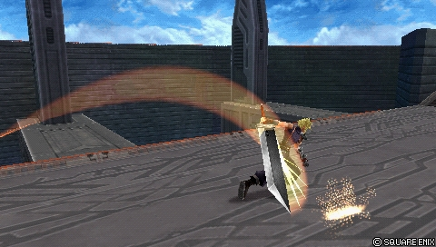
Cloud's main close-range poke: a two-part attack with a fast startup (13F), a short recovery and many cancels on the first hit for mind games. Excellent for filling the assist gauge and generous in EX (90) on impact. The second hit leads into a Chase, can start an assist combo near a wall, and the first hit even serves as an anti-air close to the ground, converting into Cross-slash.
Base damage
7, 13 (20)
Startup
13F
Type
Physical
Priority
Melee Low
EX Force
90
Effects
Chase
Cancels
Dodge, Block, Attack
CP (mastered)
30 (15)
Sonic Break21FMelee Low
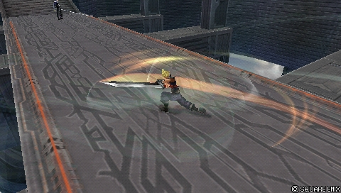
A slower secondary poke in three hits, with strong Wall Rush potential and a dedicated HP link after the second hit. The Absorb property draws the opponent in (an effective range of about 1.8 tiles in World of Darkness), which makes it a reliable whiff punisher and sometimes a gap closer. Careful: the wind visual and sound effects during the startup make the move easier to anticipate.
Base damage
8, 12, 25 (45)
Startup
21F
Type
Physical
Priority
Melee Low
EX Force
30
Effects
Wall Rush, Absorb
Cancels
Dodge
CP (mastered)
30 (15)
Climhazzard27FMelee Low
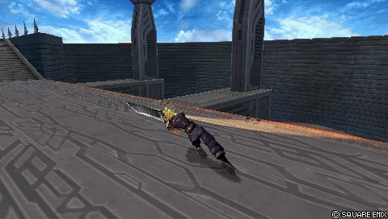
Cloud's slowest melee bravery attack on the ground, used as a punish or in combos. The second hit naturally links into his aerial bravery attacks for more damage and assist gauge, which makes it a pillar of his ground combos alongside Fire and assists. Without lock-on, Climhazzard moves Cloud in the direction he is facing — a roundabout way of retreating or repositioning.
A fast, linear low-priority projectile, made up of a Melee Mid sword strike and the projectile itself, whose explosion creates a Chase prompt and generates most of the 90 EX. Little used competitively but handy for sniping aerial dodges close to the ground; the sword strike can reflect Ranged Mid projectiles such as Lightning's Watera, without that being genuinely practical or safe.
Base damage
15, 5, 10 (30)
Startup
37F
Type
Magical
Priority
Melee Mid (sword), Ranged Low (projectile)
EX Force
90
Effects
Chase
Cancels
Dodge
CP (mastered)
30 (15)
Firaga25FRanged Mid
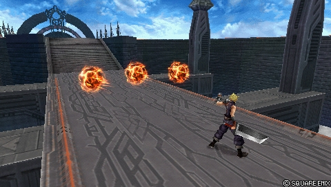
A mid-range Ranged Mid poke with 80~90 degrees of vertical tracking: it staggers blocks (opening an assist combo), stops dashes and careless bravery attacks. Each fireball can hit twice (17 base damage per ball, up to 51 in an assist combo at point-blank range). Short hit stun, Cloud immobile throughout the animation, a late cancel window: repeated use is risky and the move stays confined to occasional zoning and a filler role.
Base damage
each (7, 10)
Startup
25F
Type
Magical
Priority
Ranged Mid
EX Force
0
Cancels
Dodge
CP (mastered)
30 (15)
Fira25FRanged Low
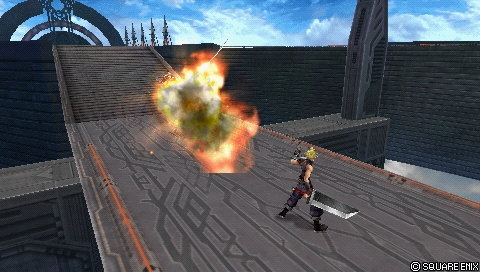
The fastest-flying fireball of the three Fire spells, multi-hit and with low knockback, but without Fire's assets: weak vertical tracking, low priority, no combo utility without an assist or a nearby wall. Hard to justify competitively, it is outclassed in an already fiercely contested economy of ground bravery slots.
Base damage
5 x 3 (15)
Startup
25F
Type
Magical
Priority
Ranged Low
EX Force
0
Cancels
Dodge
CP (mastered)
30 (15)
Fire25FRanged Low
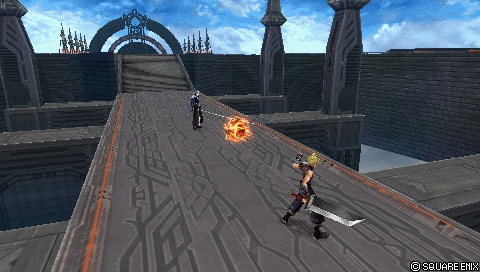
A single-hit projectile that advances slowly (about 5 seconds of presence, 2 copies on the field at most) with the best vertical tracking of Cloud's projectiles. Its real asset is the combo: Fire forces a landing lag on impact, ideal for solo ground combos and for pushing assist combos to their maximum, notably with Climhazzard.
Base damage
10
Startup
25F
Type
Magical
Priority
Ranged Low
EX Force
0
Cancels
Dodge
CP (mastered)
30 (15)
Aerial
Slashing Blow21FMelee Low
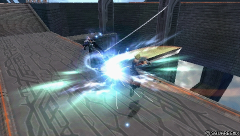
An advancing three-hit combo, one of Cloud's most important bravery attacks: gap closer, whiff punisher, reliable counter after a block stagger and filler in assist combos, with heavy base damage and the Omnislash Version 5 HP link. Its lateral tracking is good at equal height but nearly nil if the opponent is markedly above or below. Holding the stick up makes the last hit rise, handy for confirming a ceiling Wall Rush; the HP link comes out even if only the second hit connects.
Base damage
5, 10, 25 (40)
Startup
21F
Type
Physical
Priority
Melee Low
EX Force
30
Effects
Wall Rush
Cancels
Dodge
CP (mastered)
30 (15)
Aerial Fang25FMelee Low
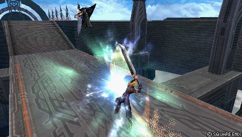
A dive that throws the opponent diagonally upwards, built to punish attacks under Cloud, especially air-to-ground. Modest knockback and limited reward without a Wall Rush or an assist, but a fairly short recovery that forgives whiffs. Interchangeable with Rising Fang depending on the matchup.
Base damage
25
Startup
25F
Type
Physical
Priority
Melee Low
EX Force
0
Effects
Wall Rush
Cancels
Dodge
CP (mastered)
30 (15)
Rising Fang21FMelee Low
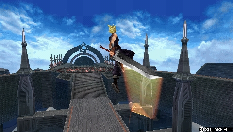
An air-to-air rise, often Cloud's third aerial bravery attack for its vertical coverage, and usable as an evasive movement too. On impact, it links into a flurry that Wall Rushes upwards (able to destroy the platform of Old Chaos Shrine) and stays active for most of the ascent. No tracking once the rise has started, and no transition if the move hits an assist character.
Base damage
3, 1 x 10, 17 (30)
Startup
21F
Type
Physical
Priority
Melee Low
EX Force
33
Effects
Wall Rush
Cancels
Dodge
CP (mastered)
30 (15)
Double Cut (midair)13FMelee Low
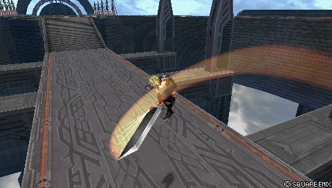
An essential aerial version: Cloud's fastest poke in the air (13F), perfect for whiffing without risk and filling the assist gauge, with 90 EX per hit. A reliable punisher where his other bravery attacks are too slow: after a Free Air Dash on an aerial dodge, or after an LV2 Assist Change stagger. The first hit converts into an assist and, since Cloud counts as airborne, calling Aerith guarantees a setup; careful, though, a second hit delayed too long can miss its target.
Base damage
7, 13 (20)
Startup
13F
Type
Physical
Priority
Melee Low
EX Force
90
Effects
Chase
Cancels
Dodge, Block, Attack
CP (mastered)
30 (15)
HP attacks
Ground
Cross-slash41FMelee High
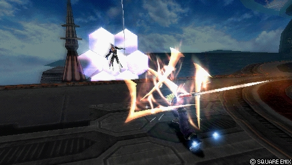
A three-hit HP combo with strong knockback: Cloud advances with each slash, covering a long distance with good horizontal tracking, and it is very effective against grounded opponents and most ground dodges. It serves as a solo follow-up after a Double Cut anti-air and its Wall Rush at range starts assist combos. On the other hand, vertical coverage is nearly nil after the first slash and the move cannot be cancelled once started: a risky move overall.
Base damage
5, 5 (10)
Startup
41F
Type
Physical
Priority
Melee High
EX Force
30
Effects
Wall Rush
Cancels
Dodge
CP (mastered)
30 (15)
Meteorain (ground)21F (up), 81F (down)Ranged Mid (up), Ranged High (down)
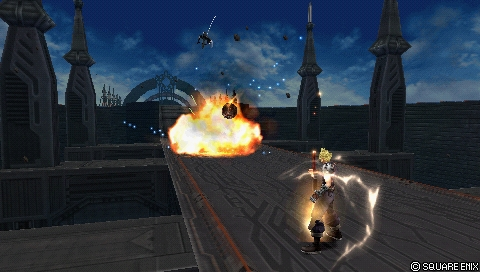
Cloud's only HP attack with Ranged priority, but its long startup (81F for the descent) limits its use as a projectile. The meteors fired in a barrage have horizontal tracking on the way down, catch lateral ground dodges and leave enough hit stun for an assist combo near a wall; the rise carries a bravery hitbox that can combo into the descent. Long recovery and no protection: a dash during the startup is enough to take Cloud away from his own projectiles and punish him.
Base damage
each (10)
Startup
21F (up), 81F (down)
Type
Magical
Priority
Ranged Mid (up), Ranged High (down)
EX Force
each 60
Cancels
Dodge
CP (mastered)
30 (15)
Aerial
Braver47FMelee High
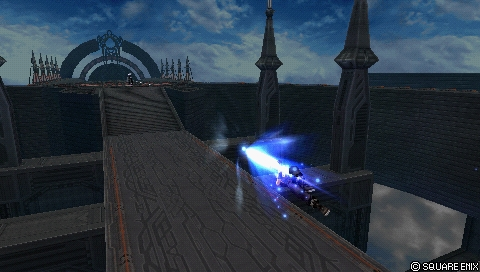
An aerial charge with all-round tracking that links into a dive on impact (up to 8 hits, 135 EX maximum over the 9 hits with Force to Courage). Its long active frames reflect mid and high projectiles such as Vaan's Windburst, but the short range, telegraphed startup and recovery make it risky on whiff. An essential HP attack all the same: a faster and safer assist combo finisher, and Cloud's only high-priority mixup against immediate blocks in the air.
Base damage
2, 1 x N (4+)
Startup
47F
Type
Physical
Priority
Melee High
EX Force
each 15
Effects
Wall Rush
Cancels
Dodge
CP (mastered)
30 (15)
Meteorain (midair)21F (up), 81F (down)Ranged Mid (up), Ranged High (down)
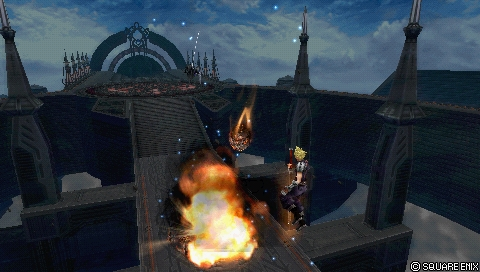
Identical to the ground version but for one difference: the descending meteors have no horizontal tracking, hence a use centred on static targets — avoiding LV2 Assist Change staggers in a combo, or generating enormous EX in a corner with the right setup. Targeting an assist character left on the field also pays a lot of EX Force. The hit stun allows combos, including under EX Revenge, with an assist near a wall or through the assist storage glitch.
Base damage
each (10)
Startup
21F (up), 81F (down)
Type
Magical
Priority
Ranged Mid (up), Ranged High (down)
EX Force
each 60
Cancels
Dodge
CP (mastered)
30 (15)
HP links (Bravery → HP)
HP attacks that fire as an extension of a specific Bravery attack — the “HP link”. They are equipped like any other HP attack.
Finishing Touch?Melee High
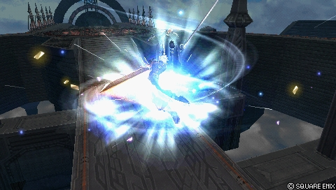
The HP link out of Sonic Break: an ascending flurry finished by a diagonal downward slam, whose Wall Rush opens many assist combos. Near a ledge, the opponent can be knocked off the platform — harmless on Lunar Subterrane, costly on Orphan's Cradle and its banish traps, which remove the Wall Rush; Kuja or Tidus convert anyway without a wall. The escape window through LV1 Assist Change is short, right at the end of the animation.
Base damage
1 x 4, 2 x 5 (+ = 34)
Startup
?
Type
Physical
Priority
Melee High
EX Force
27
Effects
Wall Rush
Cancels
Dodge
CP (mastered)
30 (15)
Omnislash Version 5??
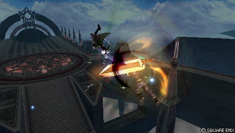
Slashing Blow's aerial HP link and arguably one of the moves that define Cloud: an HP Wall Rush with very strong downward knockback, the engine of devastating assist combos from many positions and the cornerstone of his HP linker archetype, magnified by Side by Side. The long animation gives base bravery time to recover after a combo started with an HP attack, but it exposes Cloud if the opponent escapes with LV1 Assist Change. If he does not touch the ground at the end of the move, Cloud stays airborne with a clear frame advantage for EX Cores, fillers or pressure.
Base damage
2 x 4, 5, 7 (+ = 35)
Startup
?
Type
Physical
Priority
?
EX Force
36
Effects
Wall Rush
Cancels
Dodge
CP (mastered)
30 (15)
EX Mode: Equipped Ultima Weapon! & EX Burst
The “Equipped Ultima Weapon!” EX Mode grants Regen, Critical Boost and the two Ultima Weapon effects. CRUSH: every melee priority attack becomes Melee High, the same priority as HP attacks — blocking Cloud becomes very dangerous, and only high-priority command blocks such as Jecht Block or Exdeath's Omni Block still stagger him. The effect applies from the moment EX Mode is activated, including in the middle of a bravery attack to surprise a block; only Fire, Fira, Firaga and Blade Beam's projectile are unaffected.
ATK: base damage is multiplied from x1 to x2 depending on the percentage of HP remaining (rounded down). The more health Cloud has, the harder his bravery attacks hit, which makes close exchanges very favourable once EX Mode is active.
Worth noting: activated in the Alt 1 appearance, the EX Mode is called “The power of mako!”, with no functional change whatsoever.
EX Burst : The Omnislash EX Burst inherits the health scaling: at full health (x2), the first two hits alone account for more than 50 % of the damage of an average EX Burst, which makes it one of the most powerful bursts in the game — and one of the weakest at low health. The input is simple: mash Circle until the gauge fills.
Gameplan & advanced tech
Cloud's gameplay loop revolves around close range: advance with the dash, occupy space with Double Cut (ground and air) to fill the assist gauge safely, then convert the slightest opening — a read, a dodge punish or a block stagger — into a combo built on Wall Rushes and HP links (Sonic Break > Finishing Touch, Slashing Blow > Omnislash Version 5).
On the ground, Cloud has genuine solo combos thanks to the natural recovery of Climhazzard's second hit and to Fire's landing lag: Climhazzard (2) > Double Cut is the safe bet (and can always be converted into an assist), while Fire allows him to link into most ground bravery attacks. Since these starters are reactable, they are used after a block stagger or behind an assist.
Cloud's Wall Rushes make almost all his attacks good assist combo starters; the first hit of aerial Double Cut is one of his most important starters. Finish with Omnislash Version 5 for damage, or with Braver for EX — bearing in mind that Braver, being shorter, gives bravery less time to recover if the combo started with an HP attack.
On gauges, Double Cut generates 90 EX per hit and the HP links keep up the pressure on the opponent's gauge; in EX Revenge, the sequence Double Cut x4 > Slashing Blow (1) > Omnislash Ver. 5 is the reference close-range combo. A full EX gauge transforms Cloud: his EX Mode pierces blocks and his EX Burst peaks at full health — so preserving his HP before using it pays twice over.
Defensively, stay aware of the character's limits: a slow fall after an aerial dodge, HP links exposed to Assist Change, difficulties against command blocks and against opponents playing above him. Against those profiles, favour Double Cut and short punishes over long HP links.
Character-specific tech
Fire landing lag combos
Fire forces a landing lag on impact: used after a block stagger or an assist, it opens solo ground combos and extends assist combos to the maximum. If Fire connects late, once Cloud has already regained control, he can link into almost any move.
Climhazzard lock-off movement
Without lock-on, Climhazzard moves Cloud in the direction he is facing: a roundabout way of retreating or of getting behind the opponent. If the move connects without lock-on, the sequence can still be finished.
Meteorain EX farming
If the opponent's assist character stays on the field, targeting it with aerial Meteorain generates enormous EX Force (some of it stays on the ground to be picked up). Doable after an escape with LV1 Assist Change or by dodging the assist's attack; with the right setup in a corner, Meteorain produces a considerable amount of EX.
Double Cut anti-air > Cross-slash
The first hit of ground Double Cut can anti-air an opponent close to the ground and convert into Cross-slash for solo HP damage. The timing is fairly strict — it is not a fake combo, but human error is possible, and the opponent's Precision Evasion can escape it.
Blade Beam dodge cancel
Blade Beam's explosion creates a Chase prompt and can even convert into the Kuja assist after a dodge cancel. Most of the EX (60) is generated by the explosion: after a hit at range, dashing towards the opponent recovers the bulk of the EX Force.
Documented solo combo routes
A great many very tight but very rewarding links, beyond the obvious ones around Fire: Climhazzard (up to the rise) > Double Cut or Slashing Blow; ground Double Cut (first hit on an airborne opponent) > landing lag > almost anything (Cross-slash being the common follow-up); Fire at close range > Climhazzard, Sonic Break or Double Cut; Sonic Break (2 hits) > landing lag > ground Double Cut; Meteorain near a wall > Slashing Blow (in the air above the opponent, according to the compiler's note).
Cloud has multiple solo combos thanks to Fire and Climhazzard second hit's natural recovery |
The period of time that occurs after an action has finished, but before gaining full control of the character again. For example, many HP attacks in Dissidia 012 have long recovery. This may be occasionally referred to as "endlag".
. Both attacks are reactable, but Cloud can use them after block staggers or assist (e.g. Jecht and Yuna).
Climhazzard leads to Double Cut and Slashing Blow, the latter is much harder. With Fire, Cloud can chain into other ground braveries if he is not too close to the opponent. Please note, that if Fire hits late, Cloud can combo into almost any other move. That is, when Cloud can already move while Fire is active |
The period of time when an attack is capable of doing damage.
.
Main article: Cloud Combos (Kuja Assist)
Cloud's wall rushes are great for starting assist combos. Since he has many moves that can wall rush, most of his attacks are good combo starters. Some assists can also pick up from unfinished braveries, of which Double Cut first hit (midair) is among the most important starters.
Cloud normally ends combos with the Omnislash Version 5 HP link for damage. If Cloud wants more EX Force, he can use Braver. However, the attack is much shorter, so bravery won't have as much time to recover if he started an assist combo with an HP attack.
Universal techniques (blodge, dash feint, lock off, dodge punishment): see the Techniques & glitches page.
Matchups
The wiki's matchups page is only a stub; just a few scattered elements are documented. Cloud's HP links are vulnerable to Assist Change, and two profiles make his life difficult: fast-falling characters who dodge punish well (Kain, Kefka) and those with a command block (Jecht). Cloud also has to watch the opponent's aerial dodges, since he falls slowly after his own.
On assist choice by opponent: Tidus is cited as very useful against The Emperor, and Aerith shines in aerial matchups such as Sephiroth, where Cloud leans on Double Cut more than on his HP links.
Cloud enjoys great build flexibility: raw damage (attack, high base bravery, Wall Rush), or EX Core and assist orientations with Side by Side. The documented build is an “EX Intake + Seal of Lufenia” hybrid exploiting the Equip Glitch: EX absorption through White Drops and White Gem (+20 % in total), the increased absorption range of Heaven's Cloud, and Tenacious Attacker to absorb EX even while attacking — every Double Cut speeds up the filling of the gauge without having to chase EX Force.
The Seal of Lufenia special effect adds a good dose of depletion to the opponent's EX, triggered twice per HP Wall Rush — which adds up quickly in assist combos opened by an HP link such as Omnislash Version 5. Lufenian Dirk sacrifices 1 point of DEF for a welcome ATK gain. Jump Times Boost+ adds two jumps for moving safely in the air; Counterattack and Sneak Attack raise the critical rate, and Precision Evasion gets Cloud out of tight spots.
On attacks: Double Cut (ground and air) and the Slashing Blow + Omnislash Version 5 pairing are essential in every matchup. Blade Beam (his only BRV projectile with good EX generation) and Firaga (mid keepout and a high-damage filler on a grounded Kuja, but zero EX) are flexible depending on the matchup, the stage and personal preference. Fira is to be avoided, having no distinct use next to the other projectiles.
The displayed build reaches 435 / 450 CP (with the Equip Glitch assumed to have been performed); 15 points remain available for action abilities (jump boost, speed boost), support abilities (Auto Assist Lock On) or extra abilities (Precision Jump, Achy, First Strike).
Build and check a Cloud Strife loadout slot by slot: build creator (CP gauge, ability exclusions and tournament rules applied).
Assist synergies
Cloud Strife as an assist
Cloud is one of the weakest assists in the game — he sits in the Low tier of the assist tier list, in fact. His assist bravery attacks (Sonic Break on the ground, Slashing Blow in the air, 21F each) are fast and powerful, but he does not hold the opponent for long and finishes quickly with enormous knockback. All his attacks Wall Rush, which is hard to exploit in open terrain: Cloud as an assist works better on small stages such as Pandaemonium - Top Floor and Edge of Madness, without excelling at whiff punishing or converting even there.
His assist HP attacks (Cross-slash, Braver) chase the opponent — Cross-slash above all — but that is a high price for a brief presence on the field. Added to the classic weakness against LV2 Assist Change (melee attacks get staggered), his utility does not rival the best assists in the game.
Recommended assists
Kuja — High damage, reliable conversions on every key move with or without a Wall Rush, and the added utility of his HP assists. Cloud's Wall Rushes open devastating combos, the ground Wall Rush secures Kuja's Flare Star against LV2 Assist Change, and Force Symphony forces an HP attack near walls after a Chase off Double Cut.
Aerith — Seal Evil sets up HP attacks anywhere on the stage after a Double Cut followed by a Chase, complements Cloud's EX gain (the Chase draws all the EX Force towards the attacker) and frees an accessory slot by making Tenacious Attacker optional. Valuable in aerial matchups such as Sephiroth, and her hold on the ground allows combos built on Fire and Climhazzard.
Jecht — Converts reliably off Wall Rushes and the first hit of Double Cut, and leaves time to place two Fires close to the ground to maximise the damage. Less damage than Kuja off a ground Wall Rush, but Slashing Blow > Omnislash Ver. 5 always remains available.
Tidus — Less damage on average, but his aerial bravery attack is an excellent whiff punisher: the assist chase allows Slashing Blow to be linked consistently (or Braver up close). Uncommon, but very useful against The Emperor.
Sephiroth — A “budget” Kuja with a better whiff punish, more dependent on Slashing Blow combo endings (which can partly miss depending on the angle of the chase). The Hell's Gate assist helps out in scrambles, despite a cost that is sometimes hard to justify.
Ultimecia — Niche but formidable near walls: called before the Chase, she forces HP damage or a big BRV Wall Rush through Knight's Axe, and a Wall Rush inflicted during the opponent's chase converts into Slashing Blow for HP damage.
Community tech
Meteorain (midair): massive EX generation in the corner
With the right setup in a corner, aerial Meteorain generates an outsized amount of EX; the same logic applies when targeting an assist character left on the field.
Double Cut dodge cancel into the Kuja assist (assist storage glitch)
A situational conversion: a dodge cancel from Double Cut into the Kuja assist thanks to the assist storage glitch, documented among Cloud's Kuja synergies.
A video demonstration of the niche Cloud / Ultimecia synergy: calling her before the Chase to force HP damage or a Knight's Axe BRV Wall Rush, with a Slashing Blow follow-up.
Dissidia 012: Final Fantasy - Cloud Double Assist Combo Exhibition — Muramishi 2011
A demonstration of combos in which Cloud hits the opponent during their recovery frames to unlock a second assist call within the same combo, illustrated with several assists.
A community record of solo combo routes for all 31 characters, compiled by Eddiegames on the Discord DISSIDIA and published on pastebin (last updated December 2022). Cloud is described there with a great many very tight but very rewarding links.
List of empty chases leading to an assist gauge reset (Eddiegames)
A character-by-character record of the moves whose hit stun allows an empty chase (a chase initiated without executing anything in it) followed by a reset of the opponent's assist gauge. The detail for this character is covered in the specific techniques.
The dedicated matchups page is a stub: no detailed character-by-character analysis is documented, and only a few elements of the overview and of the assist synergies can be used.
No unique mechanic is documented for Cloud (the section is absent from the wiki).
The startup of Finishing Touch and of Omnislash Version 5 is not filled in (“?” in the data), and neither is the priority of Omnislash Version 5.
The assist gauge gain values (assistGain) are empty for every move.
The wiki's video references carry neither author nor date.
The community's empty chase record is undated (the solo combo record that accompanies it is dated December 2022): how current it is cannot be established.

 Assist
Assist Heaven's Cloud
Heaven's Cloud Lufenian Dirk
Lufenian Dirk Lufenian Headband
Lufenian Headband Lufenian Vest
Lufenian Vest Muscle Belt
Muscle Belt

 Large Gap in HP
Large Gap in HP Summon Unused
Summon Unused Pre-EX Mode
Pre-EX Mode White Drop
White Drop
 Omnislash Version 5
Omnislash Version 5